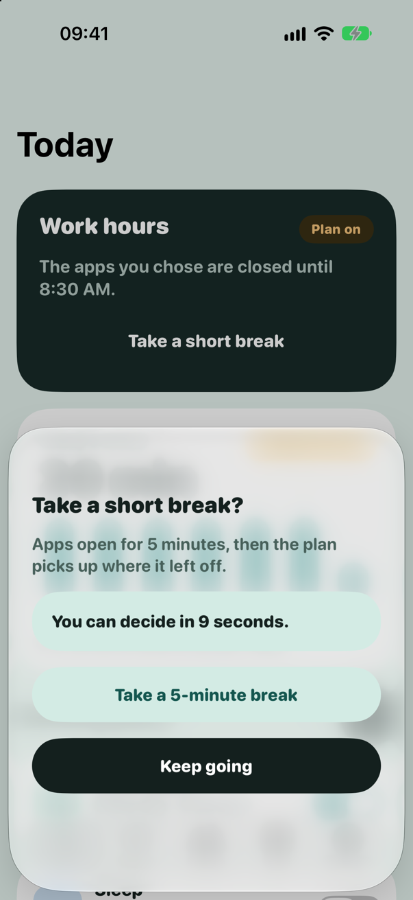

封鎖計畫
時段由你訂，其餘自動進行
計畫開始時，你選的 App 會關閉；計畫結束後，它們會再次開啟。平日、週末或任何你想要的日子，都可以各自建立計畫。
- 上班、讀書和睡覺時段各有自己的計畫
- 計畫可以跨過午夜
- 點一下就能開啟或關閉計畫

App 封鎖與專注 · iPhone、iPad、Apple Watch
Mola 會在你設定的時段，或在每日時間用完後，封鎖你選的 App；每一次專注都會為一塊瓷磚上色。不需要註冊，你的使用資料只留在你的裝置上。
需要 iOS 18 或以上版本。沒有廣告，沒有追蹤。

用 Apple 自己的選擇器，挑出最容易讓你分心的 App、類別和網站。你的選擇不會離開你的手機。
為上班、讀書和睡覺的時段建立計畫；計畫以外的時間，隨時都能開始一段專注。
每一次專注都會為一塊瓷磚上色。完成的瓷磚會排上你的牆；還沒完成的瓷磚，下次專注時會從停下的地方繼續。
封鎖計畫
計畫開始時，你選的 App 會關閉；計畫結束後，它們會再次開啟。平日、週末或任何你想要的日子，都可以各自建立計畫。
每日限制
給你選的 App 一段每日時間。時間用完後，這些 App 會被封鎖；其他 App 照常開放。

專注時段
選一個現成的方案，或自己設定專注時間、回合數和休息長度。想要的話，專注進行時你選的 App 會保持關閉。

嚴格程度
在均衡計畫中想休息，或想提前結束專注時，Mola 會先請你等一下。有時候這樣就夠了。嚴格計畫則要等結束後才能更改。

瓷磚牆
每塊瓷磚都是先勾輪廓，再上顏色，最後上釉。你從塞爾柱之星開始；牆越長越大，鬱金香、康乃馨、Rumi、欽特瑪尼、哈塔伊、交織和石榴等紋樣會陸續解鎖，你也從學徒一步步走向師傅。

Apple Watch 上的專注計時器：手錶 App 開著的時候，專注進度會與手機保持同步，畫的是同一塊瓷磚，剩餘時間和現在時刻都一眼可見。
從主畫面點一下就能開始專注，剩餘時間一目瞭然。
版面會配合螢幕大小調整；摺起裝置時，也不會失去原本的位置。
土耳其文和英文，還有德文、法文、西班牙文、日文、韓文、阿拉伯文等。
家庭
自己使用 Mola 的同時，隨時都可以建立家庭。孩子手機的每日時間、上學時間和睡眠時間，由你和孩子一起決定；孩子在自己的畫面上看得到哪條規則正在生效、原因是什麼，以及持續到什麼時候。
每日時間、上學模式和睡眠模式。沒有隱藏的規則。
孩子寫下簡短的理由來要求更多時間；家長點一下就能回覆。
Mola 不會讓家長看到訊息、照片、位置，或正在使用哪些 App。
家人裝置之間的訊息在裝置上加密；我們的伺服器無法讀取內容。
家長安排的休息或新規則，會在孩子的手機打開 Mola 時套用。Mola 透過 Apple 的「螢幕使用時間」系統運作。


可以在執行 iOS 18 或以上版本的 iPhone、執行 iPadOS 18 或以上版本的 iPad，以及執行 watchOS 11 或以上版本的 Apple Watch 上使用。
不需要。不用註冊，也沒有電子郵件或密碼；打開 Mola 就能開始使用。家庭功能同樣不會要求電子郵件地址或電話號碼：裝置用 QR 碼配對，你只需要寫一個家人看得到的名字。
可以。在「今天」分頁建立每日限制，選擇 App 並設定每日時間。時間用完後，這些 App 會被封鎖；如果限制的嚴格程度允許，你可以休息 5 分鐘。如果想改成在特定時段封鎖，請使用封鎖計畫。
如果計畫的嚴格程度允許，你可以休息 5 分鐘。均衡計畫在休息之前要先等 20 秒；嚴格計畫在結束之前沒有休息。彈性和均衡計畫隨時可以在 Mola 裡關閉；嚴格計畫要等時間到了才能關閉。
看不到。你透過 Apple 的「螢幕使用時間」選擇器來選 App；Mola 連你選了哪些 App 的名稱都不知道，只會儲存僅在你的裝置上有效的加密代號。
只要家長和孩子的手機都安裝了 Mola 即可。為了讓孩子無法自行移除規則，我們建議在「家人共享」中把孩子的 Apple 帳號設定為兒童帳號。
你的計畫、專注紀錄和瓷磚牆都儲存在你的裝置上，所以會隨 App 一起刪除。如果你用過家庭功能，「刪除你的資料」頁面說明了如何刪除伺服器上的紀錄。
用「螢幕使用時間」設定和 Mola，一步一步來。
「App 限制」、「停用時間」和 Mola 的每日限制。
25 分鐘的回合、休息，以及別讓手機打斷工作。
Mola 即將在 App Store 推出。